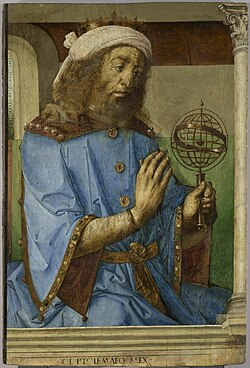

c. 85 - c. 165 AD
Ptolemy

Portrait: Justus van Gent / Pedro Berruguete, Public domain, Wikimedia Commons.
Events (4)
- 147 BCEBabylonian astronomical parameters enter Greek astronomy
systematiser · Astronomy & trigonometry
- 140 BCETrigonometry from astronomy: Hipparchus and chord tables
systematiser · Astronomy & trigonometry
- 98Menelaus: Sphaerica and spherical trigonometry
systematiser · Astronomy & trigonometry
- 150Ptolemy's Almagest
originator · Astronomy & trigonometry